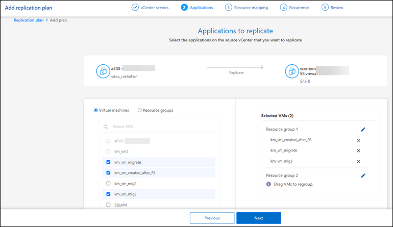
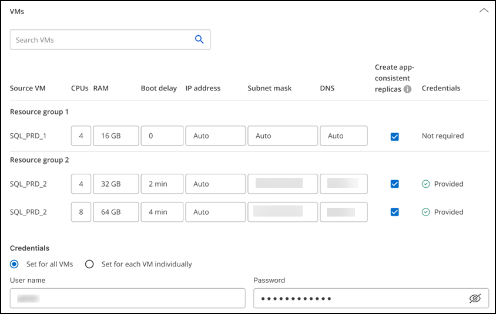
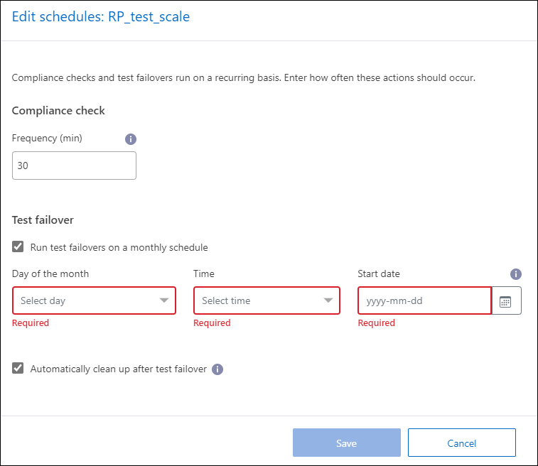

Release notes
Release notes
Create a replication plan
 Suggest changes
Suggest changes
After you’ve added vCenter sites, you’re ready to create a disaster recovery or replication plan. Select the source and destination vCenters, pick the resource groups, and group how applications should be restored and powered on. For example, you might group virtual machines associated with one application or you might group applications that have similar tiers.
Such plans are sometimes called blueprints.
You can create a replication plan and also edit schedules for compliance and testing.
Create the plan
A wizard takes you through these steps:
-
Select vCenter servers
-
Select the VMs you want to replicate and assign groups
-
Map how resources from the source environment map to the destination.
-
Identify recurrence
-
Review the plan
While you are creating the replication plan, you can define the SnapMirror relationship between source and target volumes in one of the following configurations:
-
1 to 1
-
1 to many in a fanout architecture
-
Many to 1 in a Consistency Group
-
Many to many
If you want to create a SnapMirror relationship in this service, the cluster and its SVM peering should have already been set up outside of BlueXP disaster recovery.
Select vCenter servers
First, you select the source vCenter and then select the destination vCenter.
-
From the BlueXP left nav, select Protection > Disaster recovery.
-
From the BlueXP disaster recovery top menu, select Replication plans. Or, if you are just beginning to use the service, from the Dashboard, select Add replication plan.

-
Create a name for the replication plan.
-
Select the source and target vCenters from the Source and Target vCenter lists.
-
Select Next.
Select applications to replicate and assign resource groups
The next step is to group the required virtual machines into functional resource groups. Resource groups enable you to group a set of dependent virtual machines into logical groups that meet your requirements. For example, groups could contain delayed boot orders that can be run upon recovery.

|
Each resource group can include one or more virtual machines. The virtual machines will power on based on the sequence in which you include them here. |
-
On the left side of the Applications page, select the virtual machines that you want to replicate and assign to the selected group.
The selected virtual machine is automatically added to group 1 and a new group 2 is started. Each time you add a virtual machine to the last group, another group is added.

-
Optionally, do any of the following:
-
To change groups, click the group Edit icon.
-
To remove a virtual machine from a group, select X.
-
To move a virtual machine to a different group, drag and drop it in the new group.
-
-
When you have multiple resource groups, ensure that the sequence of the groups matches the operational sequence that should occur.
Each virtual machine within a group is started in sequence based on the order here. Two groups are started in parallel.
-
Optionally, rename the group by clicking the Edit icon.
-
Select Next.
Map source resources to the target
In the Resource mapping step, specify how the resources from the source environment should map to the target.
If you want to create a SnapMirror relationship in this service, the cluster and its SVM peering should have already been set up outside of BlueXP disaster recovery.
-
In the Resource mapping page, to use the same mappings for both failover and test operations, check the box.
-
In the Failover mappings tab, select the down arrow to the right of each resource and map the resources in each:
-
Compute resources
-
Virtual networks
-
-
In the Failover mappings tab, select the down arrow to the right of each resource:
-
Virtual machines: Select the network mapping to the appropriate segment. The segments should already be provisioned, so select the appropriate segment to map the virtual machine.
SnapMirror is at the volume level. So, all virtual machines are replicated to the replication target. Make sure to select all virtual machines that are part of the datastore. If they are not selected, only the virtual machines that are part of the replication plan are processed.
-
VM CPU and RAM: Under the Virtual machines details, you can optionally resize the VM CPU and RAM parameters.
-
Boot order delay: Also, you can modify the boot order for all the selected virtual machines across the resource groups. By default, the boot order selected during resource-group selection is used; however, you can make changes at this stage.
-
DHCP or static IP: When you are mapping networking between source and target locations in the virtual machines section of the replication plan, BlueXP disaster recovery offers two options: DHCP or static IP. For static IPs, configure the subnet, gateway, and DNS servers. Additionally, enter credentials for virtual machines.
-
DHCP: If you choose this option, you provide just the credentials for the VM.
-
Static IP: You can select the same or different information from the source VM. If you choose the same as the source, you do not need to enter credentials. On the other hand, if you choose to use different information from the source, you can provide the credentials, IP address of the VM, subnet mask, DNS, and gateway information. VM guest OS credentials should be supplied to either the global level or at each VM level.

This can be very helpful when recovering large environments to smaller target clusters or for conducting disaster recovery tests without having to provision a one-to-one physical VMware infrastructure.
-
-
-
App-consistent replicas: Indicate whether to create app-consistent Snapshot copies. The service will quiesce the application and then take a Snapshot to obtain a consistent state of the application.
-
Datastores: Based on the selection of virtual machines, datastore mappings are automatically selected.
-
RPO: Enter the Recovery Point Objective (RPO) to indicate the amount of data to recover (measured in time). For example, if you enter an RPO of 60 minutes, the recovery must have data that is not older than 60 minutes at all times. If there is a disaster, you are allowing the loss of up to 60 minutes of data. Also enter the number of Snapshot copies to retain for all datastores.
-
SnapMirror relationships: If a volume has a SnapMirror relationship already established, you can select the corresponding source and target datastores. If you select a volume that does not have a SnapMirror relationship, you can create one now by selecting the working environment and its peer SVM.

If you want to create a SnapMirror relationship in this service, the cluster and its SVM peering should have already been set up outside of BlueXP disaster recovery.
-
-
Consistency Groups: When you create a replication plan, you can include VMs that are from different volumes and different SVMs. BlueXP disaster recovery creates a Consistency Group Snapshot.
-
If you specify the Recovery Point Objective (RPO), the service schedules a primary backup based on the RPO and updates the secondary destinations.
-
If the VMs are from same volume and same SVM, then the service performs a standard ONTAP Snapshot and updates the secondary destinations.
-
If the VMs are from different volume and same SVM, the service creates a Consistency Group Snapshot by including all the volumes and updates the secondary destinations.
-
If the VMs are from different volume and different SVM, the service performs a Consistency Group start phase and commit phase Snapshot by including all the volumes in the same or different cluster and updates the secondary destinations.
-
During the failover, you can select any Snapshot. If you select the latest Snapshot, the service creates on on-demand backup, updates the destination, and uses that Snapshot for the failover.
-
-
-
To set different mappings for the test environment, uncheck the box and select the Test mappings tab. Go through each tab as before, but this time for the test environment.
You can later test the entire plan. Right now, you are setting up the mappings for the test environment.
Identify the recurrence
Select whether you want to migrate data (a one-time move) to another target or replicate it at the SnapMirror frequency.
If you want to replicate it, identify how often data should be mirrored.
-
In the Recurrence page, select Migrate or Replicate.
-
Migrate: Select to move the application to the target location.
-
Replicate: Keep the target copy up to date with changes from the source copy in a recurring replication.

-
-
Select Next.
Confirm the replication plan
Finally, take a few moments to confirm the replication plan.
|
|
You can later disable or delete the replication plan. |
-
Review information in each tab: Plan Details, Failover Mapping, Virtual Machines.
-
Select Add plan.
The plan is added to the list of plans.
Edit schedules to test compliance and ensure failover tests work
You might want to set up schedules to test compliance and failover tests so that you ensure that they will work correctly should you need them.
-
Compliance time impact: When a replication plan is created, the service creates a compliance schedule by default. The default compliance time is 30 minutes. To change this time, you can use edit the schedule in the replication plan.
-
Test failover impact: You can test a failover process on demand or by a schedule. This lets you test the failover of virtual machines to a destination that is specified in a replication plan.
A test failover creates a FlexClone volume, mounts the datastore, and moves the workload on that datastore. A test failover operation does not impact production workloads, the SnapMirror relationship used on the test site, and protected workloads that must continue to operate normally.
Based on the schedule, the failover test runs and ensures that workloads are moving to the destination specified by the replication plan.
-
From the BlueXP disaster recovery top menu, select Replication plans.

-
Select the Actions
 icon and select Edit schedules.
icon and select Edit schedules. -
Enter how frequently in minutes that you want BlueXP disaster recovery to check test compliance.
-
To check that your failover tests are healthy, check Run failovers on a monthly schedule.
-
Select the day of the month and time you want these tests to run.
-
Enter the date in yyyy-mm-dd format when you want the test to start.

-
-
To clean up the test environment after the failover test finishes, check Automatically clean up after test failover.
This process unregisters the temporary VMs from the test location, deletes the FlexClone volume that was created, and unmounts the temporary datastores. -
Select Save.